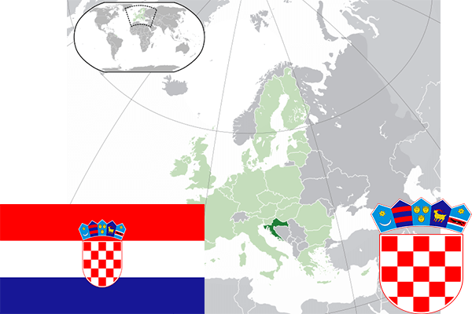

To`liq nomi: Xorvatiya Respublikasi
Region: Yevropaning Janubiy-sharqiy qismi
Qonunchilik shakli: Respublika
Mustaqillik kuni : 25-iyun, 1991 yil (Yugoslavakiyadan)
Poytaxt: Zagreb
Maydoni: 56 594 km² (dunyoda 126 -o`rinda )
Chegaradosh davlatlari: Sloveniya, Vengriya, Serbiya, Bosniya va Gersegovina, Chernogoriya
Aholisi: 4 154 213 (dunyoda 126 -o`rinda, 2016 -yil roʻyxat)
Aholi zichligi: 73,4 /km²
Aholining o`rtacha yoshi: 75,05 yil ( 78,8 ayollar, 71,3 erkaklar)
Rasmiy tili: Xorvat tili
Dini: 77% katolik, pravoslav va islom
Pul birligi: Xorvatiya Kunasi
Telefon prefiksi: +385
Internet domen: .hr
Xalqaro tashkilotlarga a`zoligi: BMT (1992 – yildan), Yevropa Ittifoqi (2013-yildan)
Dengiz va okeanlarga chiqishi: Adriatika dengizi
YIM: Butun: $ 87,300 mlrd, Jon boshiga: $ 20 392 (2006 - yil roʻyxati)
Yirik shaharlari: Zagreb, Split, Rieka, Osiek